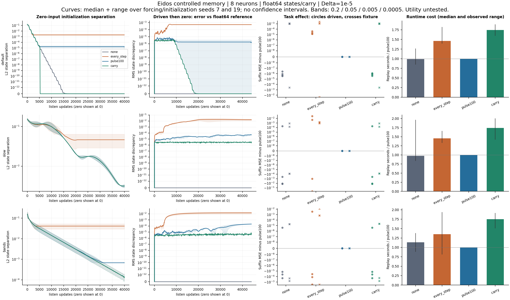

EIDOS / PROOF RECEIPTS
Controlled memory benchmark
8 neurons · 192 trajectories · 6 precision checks
Adoption: inconclusive. Global proof readiness: unknown. Numerical fidelity cannot establish detection utility.
| Check | Status | Evidence in bundle |
|---|
| Frozen evaluator and inputs | passed | main/freeze.json |
| Actual listen adapter / reset | passed | main/adapter_selected_size.json |
| Exact scalar and nonnormal controls | passed | calibration/calibration.json |
| Declared numerical trajectories | passed | main/run_manifest.json |
| Full-horizon precision checks | passed | report/precision_summary.json |
| Operational utility gate | missing | main/protocol.json: null task/overhead thresholds |
Evidence
Decision and proof logic · Full metric table · Plot data

North-star claim
Eidos Brain is a self-monitoring streaming intelligence codec: learns live streams, compresses predictable behavior, preserves meaningful anomalies, monitors internal state, and emits human-readable incident receipts.
This experiment strengthens reproducibility and interpretation of internal-state persistence.
Remaining uncertainty
Default-size reservoir, GPU, Adaptive engine feedback, Labeled detection utility, Compression value, Theorem originality.
Raw, merged and calibrated detection metrics are NA: no Sentinel path was exercised.